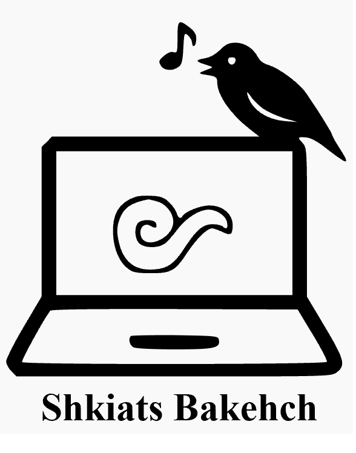

Los resultados de la búsqueda aparecerán aquí.
1. Selecciona el idioma en el que deseas buscar
2. Escribe la palabra en el campo de búsqueda
3. Haz clic en "Buscar" o presiona Enter
4. Si deseas sugerir correcciones u observaciones, puedes mandar un mensaje "tu dirección de contacto"